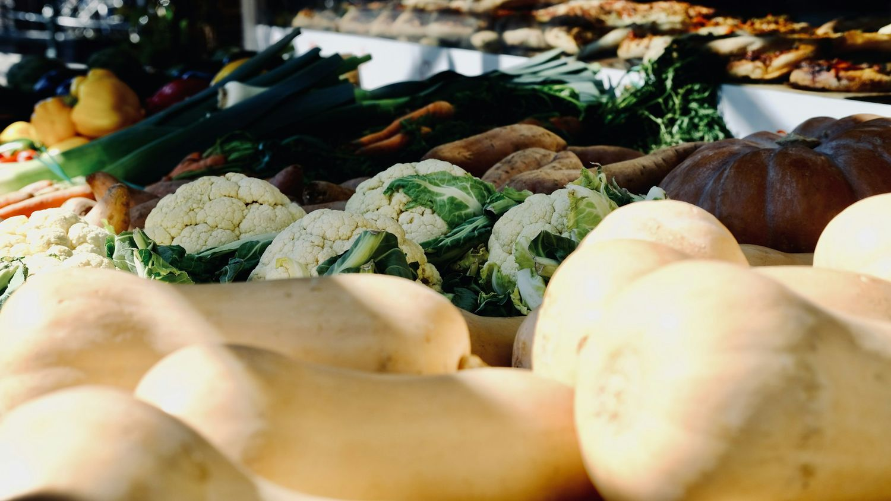
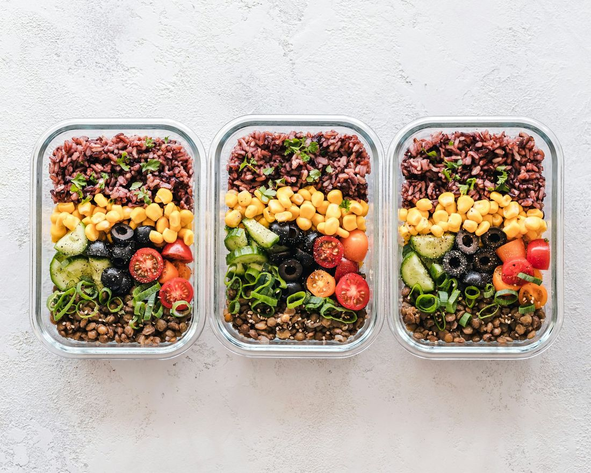

Good Food. Prepared Where Home Is.
Professional culinary services designed around busy households, families and everyday life.


Food that fits your week
Victory is not a restaurant, a food truck or a conventional caterer. It is a professional culinary service built around how households actually live.
Meal preparation
Meals prepared for your household, so good food is ready when you are.
Our focusMeal planning
Menus planned around your tastes, your schedule and your week.
GrowingCooking instruction
Learn to cook the food you love, at your own pace.
Growing
The kitchen comes to the people
Busy weeks should not mean giving up good food. Victory brings professional culinary care to the place that matters most, your home.
Our aim is simple: food that is prepared with care, planned around you, and ready for real life.
From first hello to first meal
Tell us
Share your household, tastes and needs.
Plan
We plan the menu with you.
Prepare
We prepare the food with care.
Enjoy
Sit down to good food, made for you.
Ready to put dinner on the table?
Tell us about your household and what you need. We will come back to you.